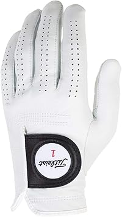
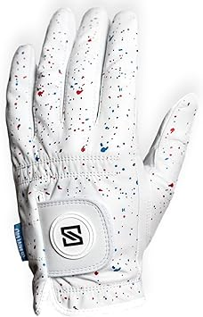
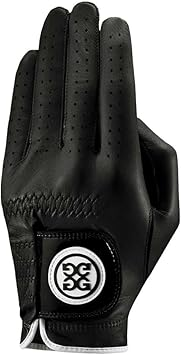

← cabrettaleather.com
Best Cabrettaleather in 2026: An Honest Look
May 2026
The cabrettaleather market in 2026 looks nothing like it did a year ago. New brands, better tech, and more competitive pricing across the board.
Critical Factors Most Miss
- Warranty — Real warranty coverage (1+ year) signals a manufacturer that stands behind their product.
- Price trends — cabrettaleather prices fluctuate. Track your picks and buy when the price dips.
- Dimensions matter — Read the actual measurements. "Large" means different things to different cabrettaleather manufacturers.
- Brand track record — Established cabrettaleather brands have more to lose from bad products. That accountability matters.
What We Recommend



Insider Advice
- Buying cabrettaleather as a gift? Pick something with easy exchanges. Preferences are personal.
- Set price alerts on your top picks. cabrettaleather prices can drop 30-40% without warning.
- Set a firm budget before browsing. It's easy to creep up $50-100 comparing cabrettaleather features.
Rookie Mistakes
Panic buying on sale days — Prime Day and Black Friday cabrettaleather deals aren't always real discounts. Check year-round pricing.
Waiting for the perfect deal — If you need cabrettaleather now, buy now. A 10% discount in 3 months costs you 3 months of use.
Trusting fake reviews — Look for reviews with photos and specific details. Generic praise is often planted.
Our Take
Our comparison tables on cabrettaleather.com break down options by price, features, and ratings. Start there.
Affiliate Disclosure: As an Amazon Associate, we earn from qualifying purchases. This doesn't affect our recommendations.